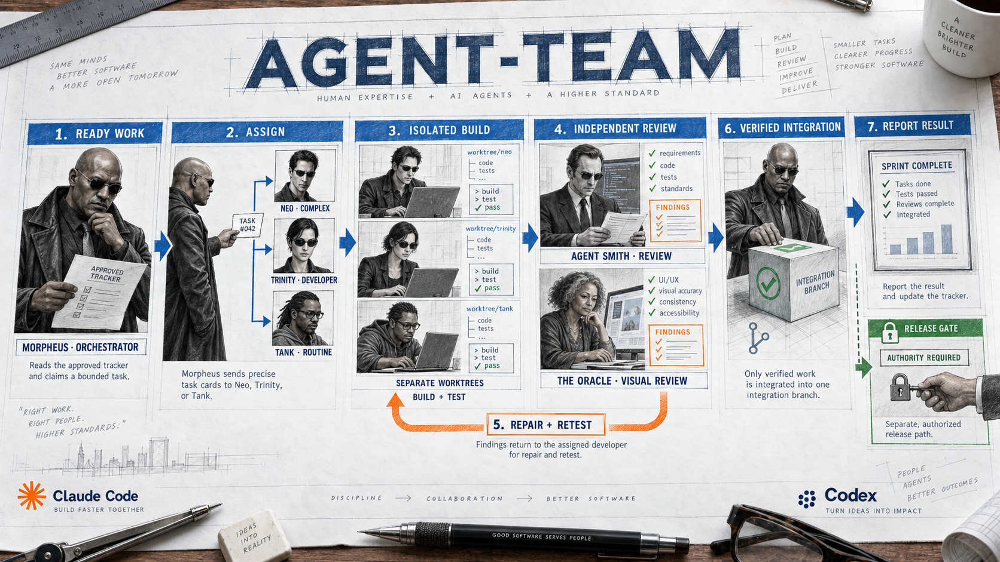

Agent-Team gives one AI agent the lead. The lead splits work into small tasks. Other agents build and review those tasks. The lead joins only verified work.
Important: Agent-Team is a skill for Codex or Claude Code. It is not a shell command. You speak to it inside your AI coding host.

Morpheus controls the run. Developers work in isolation. Agent Smith and the Oracle provide independent review.
What Agent-Team does
Think about a group science project. One student keeps the plan. Other students work on separate parts. A final student checks the facts. Agent-Team uses the same idea for software work.
The orchestratorOwns scope, task choice, integration, and release.
The developerBuilds one bounded task in a separate worktree.
The reviewerChecks requirements and code quality independently.
Agent-Team can use more than one developer when tasks do not touch the same files. The host can reduce the team count when it needs space for review. Only the orchestrator assigns work. Worker agents do not create more worker agents.
Install the complete package
Choose one host and one scope. User scope makes the skill available across projects. Project scope keeps it in one project.
Scope
Codex
Claude Code
User
~/.agents/skills/agent-team
~/.claude/skills/agent-team
Project
.agents/skills/agent-team
.claude/skills/agent-team
Open a supported host
Install Codex or Claude Code. Sign in to your own account. Confirm that your account can use the models that you select.
Check the base tools
Check Git, GitHub CLI, Node.js 24, and npm. Use gh auth status to check GitHub access. Never paste a token into chat.
Ask the agent to install it
Recommended install prompt
Install the complete Agent-Team package from https://github.com/thebpandey/agent-team. Use release v7.0.1 and my authorized GitHub access. Inspect the source, license, exact revision, and any existing installation first. Preserve custom files and unrelated settings. Use this actual host only. Use user scope unless I name a project scope. Verify the package and tell me which reload or trust steps remain.
Reload and review trust
Restart or reload the host. Review its hook list. In Codex, use /hooks when that control is available. Trust only the entries that you reviewed.
Installer reference for maintainers
Run the bundled helper from the checked Agent-Team package. Choose one command.
Codex, user scope
node hooks/agent-team-cli.mjs install --host codex --scope user
A dependency is a tool that Agent-Team uses. Setup checks whether each selected tool works. A file on disk is not enough.
Required
Codex or Claude Code: runs the skill and the agents.
Git: tracks changes and supports separate worktrees.
Node.js 24 and npm: run Agent-Team helpers and hooks.
Serena: helps agents find and understand code.
Microsoft Playwright CLI: checks real browser behavior. It is required even for backend projects.
Python and uv: support Serena when the selected release needs them.
Default or optional
Default profiles: ast-grep, narrowed LeanCTX, Superpowers, Ponytail, Impeccable, and React Best Practices.
Beads: an optional task tracker. A root or designated TASKS.md file also works.
Context7: optional current library documentation.
beads_viewer: optional dashboard for a selected Beads graph.
subagent-tax: optional maintainer diagnostic. It is not an onboarding tool.
First-use rule: Setup prepares missing required tools and selected defaults. Optional tools stay off until you select them. Sign-in, payment, administrator approval, and native hook trust still belong to you.
Invoke the skill in your host
Use the correct prefix. These messages go into the Codex or Claude Code chat. Do not run them in Bash.
Codex
Help
$agent-team help
Claude Code
Help
/agent-team help
You can also use plain language. For example: Agent-Team, show the setup status for this project.
Set up the project
Setup prepares the project. It does not start development or turn on deployment.
Confirm the project root
Agent-Team finds the main Git project, its integration branch, and the selected task tracker.
Give it ready work
Use an approved Project Kickoff handoff, an existing plan, or one clear task with acceptance checks.
Run setup
Codex
$agent-team setup
Claude Code
/agent-team setup
Read the readiness report
Look for four groups: host access, runtimes and tools, selected skills, and project readiness. Fix each item marked Missing, Manual action, or Unavailable.
Complete your manual steps
Finish sign-in, organization access, administrator approval, host reload, and hook trust when setup requests them.
Choose settings
Settings belong to the project. Codex and Claude Code keep separate model choices. A saved choice cannot change the model of the current parent session.
Show the compact settings view
$agent-team settings
Change one setting in plain language
Agent-Team, change only the reviewer model. Show supported choices, effort levels, cost trade-offs, and the current recommendation.
Run setting
Built-in value
Meaning
parallel_teams
1
Requested active development teams. The supported range is 1 to 6.
continuous
false
When on, pick the next authorized task after integration.
auto_deploy
false
When on, release verified batches to an already authorized target.
deploy_batch_tasks
Not set
Use the effective run limit unless you select a task batch size.
A start command can override these values for one run. It does not change the saved defaults.
Launch a run
Start only after setup reports enough readiness for the selected work.
One ready task
Codex
$agent-team start
Two teams with refill
Codex
$agent-team start 2 continuous
One named task
Codex
$agent-team start email-preferences
Require a preview
Claude Code
/agent-team start with-preview
Team count is not agent count. Each task can need a developer and a reviewer. Host limits can reduce the number of tasks that run at the same time.
Pause, resume, and check status
Read recorded status
$agent-team status all
Pause after safe checkpoints
$agent-team pause all
Resume from saved evidence
$agent-team resume all
How the harness works
A failed review returns to repair and testing. It never skips the quality gate.
Read ready work. The orchestrator reads the one selected tracker.
Check safety. It checks scope, dependencies, ownership, branch, and acceptance tests.
Claim one task. A claim prevents two writers from owning the same work.
Build in isolation. A developer uses a separate Git worktree and owns only named paths.
Review independently. A separate reviewer checks the complete revision.
Repair problems. Normal findings return to the developer. The team tests the repair again.
Integrate verified work. The orchestrator joins the safe revision into the chosen integration branch.
Continue or stop. Continuous mode selects the next authorized task. A finite run reports its result.
Release separately. Deployment needs an authorized target and all required gates.
If work is blocked: Agent-Team saves a safe checkpoint, keeps the task claim, and frees stopped compute when it can. Resume checks ownership and current evidence before work continues.
Use Project Kickoff first
Project Kickoff is optional. It helps you decide what to build. Agent-Team then helps you build the approved plan.
Project Kickoff
Moves through discovery, approved planning, setup, and handoff. It asks one unresolved question at a time. It creates the approved product, experience, technical, scaffold, and handoff records. It does not implement product features.
Agent-Team
Reuses the approved handoff. It loads the task tracker, checks readiness, assigns bounded work, reviews changes, integrates verified revisions, and releases only with authority.
Install Project Kickoff
Use the official Project Kickoff repository. Install the complete package in the matching project skill folder. Follow its license. Keep a private package out of application commits.
Start or audit the project
New project in Codex
$project-kickoff start Build a study planner for high-school students.
Existing project in Claude Code
/project-kickoff audit /absolute/path/to/project
Answer one question at a time
Approve each planning stage. Project Kickoff records the decisions. A changed decision updates only the affected plans.
Complete the handoff
Approve PLAN.md, choose one tracker, and let Project Kickoff seed stable task IDs. It prepares Agent-Team but does not start it.
Set up Agent-Team
Reuse the handoff
$agent-team setup
Reuse the approved Project Kickoff handoff and its selected tracker. Preserve the integration branch, task IDs, acceptance checks, and recorded decisions.
Launch the approved work
Safe first run
$agent-team start
Example in plain language
You ask Project Kickoff to plan a study app. It helps you choose users, features, design, technology, and tests. It writes an approved plan and creates the task records. You then ask Agent-Team to set up. Agent-Team reads those records. It gives the login task to one developer and the schedule task to another when their files do not conflict. A reviewer checks each result. The orchestrator integrates only work that passes.
If you already have a good plan and tracker, you can skip Project Kickoff. Agent-Team does not require it.